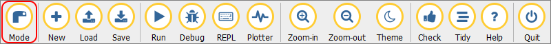
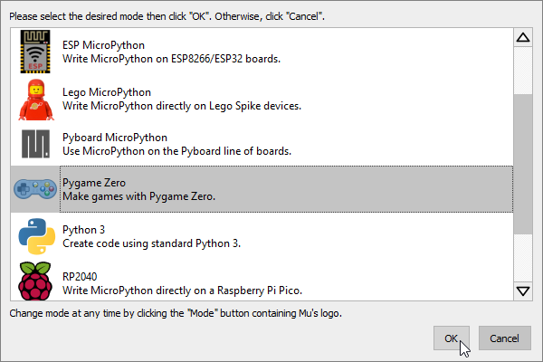
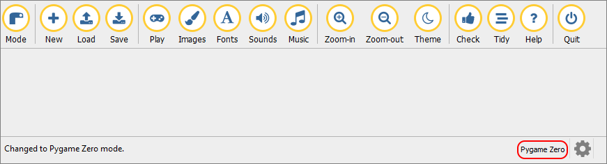
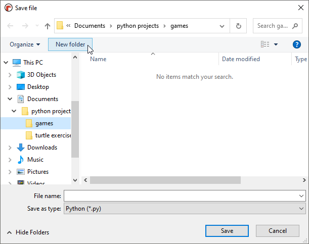
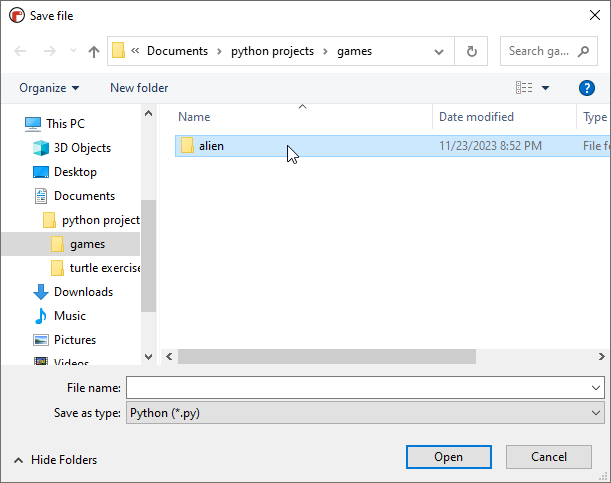
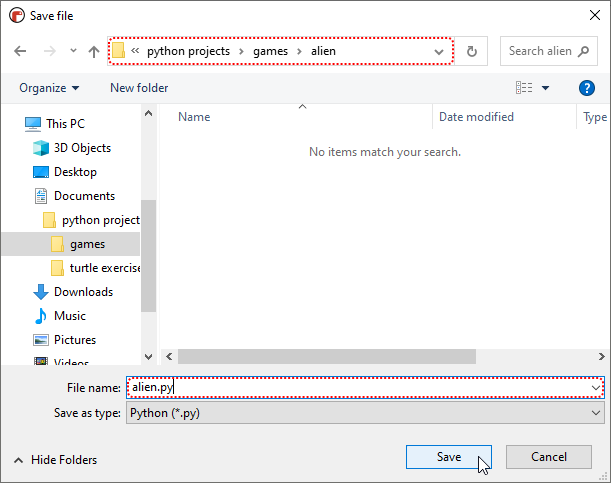
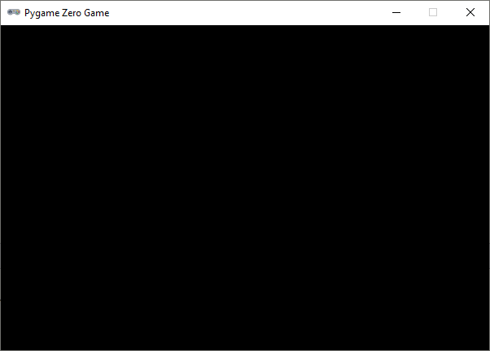

1.1. Pygame Zero#
1.1.1. Pygame mode#
Voor het maken van een game in Mu editor, is het nodig dat je Mu in de Pygame Zero stand zet. Dat gaat als volgt:
Klik op de Mode knop.

Selecteer Pygame Zero en klik op Ok.

Als je dit goed hebt gedaan, staat nu rechtsonder in de statusbalk van Mu editor Pygame Zero.

Je ziet tevens dat de knoppenbalk een beetje is veranderd. Bijvoorbeeld in plaats van Run vind je nu een Play knop.
1.1.2. Mappenstructuur#
Bij het programmeren van een game gebruik je vaak veel bestanden: afbeeldingen, geluiden, lettertypes etcetera. Om te voorkomen dat je na enige tijd door de bomen het bos niet meer ziet, is het belangrijk dat je werkt met een goede mappenstructuur. Maak in je Documenten/Python Projecten map een submap Games.
Elke game een eigen map
In de volgende lessen ga je verschillende games maken. Voor elke game schrijf je natuurlijk een Python codebestand maar daarnaast gebruik je ook afbeeldingen, geluiden en andere bestanden. Het is belangrijk dat je de bestanden die bij één game horen netjes bij elkaar bewaart. Maak daarom altijd voor elke game een eigen map.
Je kunt die map maken in de Verkenner, maar hieronder zul je zien dat het ook via het Safe file venster van Mu editor kan.
1.1.3. Codebestand#
Maak in Mu editor een nieuwe bestand aan met de New knop. Voordat je er code in gaat typen, sla je het bestand op in een nieuwe map. Doe dat op de volgende manier:
Klik op Save. Navigeer naar je nieuwe
Gamesmap en klik daarna op de knop Nieuwe map (Engels: New folder).
Noem de nieuwe map
alien.
Dubbelklik op de map
alienom hem te openen. Sla je bestand vervolgens op onder de naamalien.py.
Als je alle stappen goed hebt uitgevoerd, bevindt je bestand alien.py zich in de map Documenten/Python Projecten/Games/alien.
1.1.4. Vensterafmetingen#
En nu is het tijd voor de eerste code. Typ het volgende in je bestand. Niet kopiëren en plakken, want het is belangrijk dat je deze code (letterlijk) in de vingers krijgt voor later. Let op het verschil tussen hoofdletters en kleine letters.
Klik op Play om deze code te runnen. Er verschijnt een venster:

Waarschijnlijk begrijp je al wat de woorden WIDTH en HEIGHT betekenen. Zo niet, verander dan iets aan de getallen en run de code opnieuw om het effect ervan te zien.
Misschien lijkt het alsof je veel werk hebt moeten verzetten om alleen maar een zwart venster op het scherm te toveren, maar van de mappenstructuur die je in dit deel hebt gemaakt, ga je nog veel plezier hebben. En in het volgende deel wordt de invulling van het venster uiteraard een stuk interessanter.